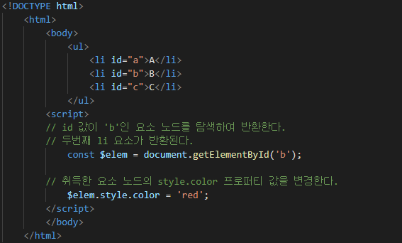
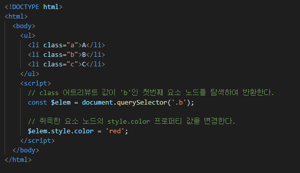

DOM(Document Object Model)은 HTML 문서의 계층적 구조와 정보를 표현하며 이를 제어할 수 있는 API, 즉 프로퍼티와 메소드를 제공하는 트리 자료 구조이다.
DOM(Document Object Model)은 HTML 문서의 계층적 구조와 정보를 표현하며 이를 제어할 수 있는 API, 즉 프로퍼티와 메소드를 제공하는 트리 자료 구조이다.
HTML 요소는 렌더링 엔진에 의해 파싱되어 DOM을 구성하는 요소 노드 객체로 변환된다. 이때 HTML 요소의 어트리뷰트는 어트리뷰트 노드로, HTML 요소의 텍스트 컨텐츠는 텍스트 노드로 변환된다.
HTML 요소 간의 부자 관계를 반영하여 HTML 문서의 구성 요소인 HTML 요소를 객체화한 모든 노드 객체들을 트리 자료 구조로 구성한다.
DOM은 노드 객체의 계층적인 구조로 구성된다. 노드 객체는 종류가 있고 상속 구조를 갖는다. 노드 객체는 총 12개의 종류(노드 타입)가 있다. 이 중에서 중요한 노드 타입은 아래와 같이 4가지이다.
getElementById 메소드는 Document.prototype의 프로퍼티이다. 따라서 반드시 문서 노드 document를 통해 호출해야 한다.

HTML 문서 내에는 중복된 id 값을 갖는 요소가 여러 개 존재한다 하더라도 getElementById 메소드는 인수로 전달된 id 값을 갖는 첫번째 요소 노드만을 반환한다. (*언제나 단 하나의 요소 노드를 반환한다)
querySelector 메소드는 인수로 전달한 CSS 선택자를 만족시키는 하나의 요소 노드를 탐색하여 반환한다.
만약 인수로 전달한 CSS 선택자를 만족시키는 요소 노드가 여러 개인 경우, 첫번째 요소 노드만 반환한다.

CSS 선택자 문법을 사용하는 querySelector, querySelectorAll 메소드는 구체적인 조건으로 요소 노드를 취득할 수 있고 일관된 방식으로 요소 노드를 취득할 수 있다는 장점이 있다.
id가 있는 요소를 취득하는 경우에는 getElementById 메소드를 사용하고 그 외의 경우에는 querySelector, querySelectorAll 메소드를 사용하는 것을 추천한다.
요소 노드의 textContent 프로퍼티에 문자열을 할당하면 요소 노드의 모든 자식 노드가 제거되고 할당한 문자열이 텍스트로 추가된다.
기존 요소에는 영향을 주지 않고 새롭게 삽입될 요소만을 파싱하여 DOM에 반영하므로 기존의 자식노드를 모두 제거하고 처음부터 생성하여 반영하는 innerHTML 프로퍼티보다 효율적이다.